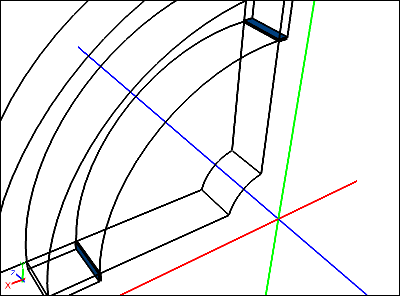

Rotating Paddle using Moving Reference Frame
Simulate an incompressible, steady-state, turbulent water flow within a mixer with a rotating paddle using a Moving Reference Frame (MRF) in pseudo 2D. View velocity vectors and monitor the torque on the paddle.

This tutorial is classed as advanced and you should consider completing other simpler RANS Flow tutorials as a prerequisite, such as "Incompressible Flow Through a Pipe into a Box".
Goals
In this tutorial, you will learn how to:
- Specify fluid conditions on a multiple-volume flow domain for an incompressible, steady-state, turbulent water flow simulation
- Specify boundary conditions on faces
- Use an angular velocity condition to specify a Moving Reference Frame
- Use the link tool and a cyclic condition to reduce the simulation to a quadrant
- Specify meshing parameters
- Generate velocity vectors
- Create a torque (moment) monitor
- Monitor residuals to determine flow simulation convergence
Assumptions
- You have activated the Caedium RANS Flow add-on, or Caedium Professional.
- You are familiar with Caedium essentials.
- You have completed simpler RANS Flow tutorials.
- You have either:
- Launched Caedium with the project file (mixer-geom.sym) containing the geometry for this tutorial
- Created the geometry by following the tutorial "Mixer Quadrant"
The geometry within Caedium should appear as shown below.
The geometry for this tutorial is specially configured so that you can generate a multi-block hexahedra mesh one cell thick to perform a pseudo 2D simulation. The multiple volumes are connected through common faces that were configured in the geometry creation tutorial using the Faces->Connect tool in the Geometry Tool Palette.
Group the Geometry
For more details on the advanced multi-selection technique used in this section see "Camera View Control and Entity Selection".
Group Volumes
Right-click on the View Window (view) background, double-click sim->Volumes in the Select dialog, select Group from the menu, and select Properties from the menu.
In the Properties Panel, select the Group tab and set Name to flow-domain. Press Enter on the keyboard to apply the changes to the Properties Panel.
To shade the geometry faces, right-click on the View Window background, double-click sim->Faces, and select Properties from the menu. In the Properties Panel, turn off the Transparent property to make all faces visible (shaded).
Group Front and Back Faces
The 5 front faces are shown below in blue:
In the View Window, ensure that only the background is selected (i.e., no geometry is selected). Hold down both the Shift key (to suppress the Select dialog) and the Ctrl key (to add pick to the current selection), and use successive right-clicks to select all the front faces (blue) as shown above. Be sure to confirm that you have selected a face by looking for all the face edges being highlighted. On the last selection, select Group from the menu. In the Properties Panel, select the Group tab and set the Name to front. The front group should now contain the following faces: face_98, face_103, face_107, face_111, face_115.
The 5 back faces are shown below in green:
Perform the same multi-select process to create the back group of faces (green): face_99, face_104, face_108, face_112, face_116.
Group Sides
The 12 side faces are shown below in red:
Perform the multi-select process to create the sides group for faces (red): face_63, face_67, face_82, face_90, face_96, face_97, face_106, face_109, face_110, face_113, face_114, face_117.
Group Paddle
The 5 faces of the paddle are shown below in green:

Perform the multi-select process to create the paddle group for faces (green): face_67, face_97, face_110, face_114, face_117.
Group Paddle Tips
The 2 faces of the paddle tips are shown below in blue:

Perform the multi-select process to create the tips group for faces (blue): face_97, face_110.
Specify the Substance Settings
Specify the Fluid Conditions
Select the Physics Tool Palette.
Select Liquids->Water. The Properties Panel will show the default properties for water. To enable steady, incompressible, turbulent (viscous) flow the State->Rotational and State->Viscous properties should be set to Yes (their default values), and the State->Heat Transfer, State->Species, and State->Transient properties should to be set to No (their default values).
Drag and drop the Water tool onto a face of a volume, double-click the flow-domain group in the Select dialog, and select Done to set water as the fluid inside the flow domain.
Set the Initial Velocity for the Simulation
With the flow domain already selected from the previous step, expand the Physics: Initial property in the Properties Panel and set U to Fixed Value. Set U: Fixed Value->Value to [0 0 0].
Initial values are used by the flow (simulation) solver to initialize its primary fields (e.g., pressure, velocity). For this simulation there is not a dominant Cartesian velocity direction, hence it is initialized to zero.
Set the Reference Velocity for the Simulation
The reference properties are used by the flow solver, boundary conditions, and initial conditions. The reference velocity is used to initialize primary simulation variables, such as the turbulent scalar field k.
For this simulation the paddle will be rotating around the Z-axis at 100 rpm = 600 degrees/s = 10.472 radians/s. Given V = omega * r, where V is the tangential velocity, omega is the angular velocity in radians/s, and r is the radius, we can calculate the reference velocity as the paddle tip speed = 10.472 * 0.4 = 4.189 m/s.
Set Substance: Water->Properties->Phase: Single->Reference->U: Fixed Value->Value to [4.189 0 0].
Set Flow Solver Properties
In the Properties Panel, expand the Substance: Water->Solver: RANS Flow->Relaxation Factors property, and set p/rho to 0.7.
Changing the default pressure/density relaxation factor in this example will help the simulation to converge more quickly. See "Relaxation Factors in RANS Flow Solvers" for tips on setting relaxation factors.
In the Properties Panel, expand the Substance: Water->Solver: RANS Flow->Solution property, and set Non Orthogonal Corrections to 0.
The Non Orthogonal Corrections property controls the number of solver passes to counter non-orthogonal aligned cell neighbor centroids. This simulation will create a high quality hexahedra mesh so this correction is unnecessary.
Specify the Volume Condition
Angular Velocity Condition for Rotating Paddle
Select the Volumes->Angular Velocity tool. In the Properties Panel, set Velocity to [0 0 600].
The paddle volume is shown below in green:
Drag and drop the Angular Velocity tool onto the axes in the View Window and select Set Axes. Right-click on a face on the paddle annulus volume (green), double-click volume_21 in the Select dialog, and select Done.
The angular velocity condition applied to a volume is equivalent to a Moving Reference Frame (MRF). It requires an axis of rotation if the rotation is not around the origin.
Specify the Boundary Conditions
By creating a one cell thick mesh and not creating any boundary conditions on the front and back face groups the flow solver will perform a pseudo 2D flow simulation.
Wall Conditions
Drag and drop the Faces->Wall tool onto a face of the sides group. Double-click sides in the Select dialog and select Done to create walls on the sides of the flow domain.
A wall is a solid surface through which fluid cannot flow.
Cyclic Condition
Select the Geometry Tool Palette.
Select the Faces->Link tool. In the Properties Panel, set Transform to Rotate, and set Rotate to [0 0 90].
The link source face (green) and the link target face (red) are shown below:
Drag and drop the Link tool onto the axes in the View Window and select Set Axes. Right-click on the link source face (green), and double-click face_82 in the Select dialog. Select Select/Deselect from the menu, right-click on the link target face (red), and double-click face_90 in the Select dialog. Select Done to create the linked faces.
With the linked faces still selected, select the Physics Tool Palette. Double click Faces->Cyclic and select Done to assign the linked faces as cyclics.
A cyclic transforms flow field variables (e.g., velocity) from a source face to a target face so that only a slice of an axi-symmetric simulation is required. Cyclic faces are configured as pairs and the transform applies from the source to the target.
Angular Velocity Condition for the Paddle Tips
Select the Faces->Angular Velocity tool. In the Properties Panel, set Velocity to [0 0 600].
Drag and drop the Angular Velocity tool onto the axes in the View Window and select Set Axes. Right-click on a paddle tip face, double-click tips in the Select dialog, and select Done.
The paddle tips are outside the angular velocity condition applied to the paddle volume, hence the need to apply an explicit angular velocity condition to the tips.
Specify Meshing Parameters
The automated meshing topology recognition system will identify which meshing algorithm is best suited to a given configuration. In this case the geometry was constructed to be compatible with the multi-block hexahedra meshing algorithms.
You do not need to apply any volume or boundary condition prior to focusing on the meshing process - all that is required is an active Substance on your flow domain.
First we will focus on the surface mesh to avoid the extra time required to create the volume mesh.
To see individual surface mesh elements during the meshing process, right-click on the View Window background, double-click sim->Faces, and select Properties from the menu. In the Properties Panel, turn on the Transparent property and set Style to Flat.
Select the Results Tool Palette. With all faces still selected from the previous operation select the Scalar Fields->A (area) tool, click Add A at the bottom of the Properties Panel and select Color Map.
The request for the area color map will cause all the faces to be meshed.
Specify Accuracy
You can control the mesh resolution of a flow domain by using the Accuracy tool, as shown in this section.
One Cell Thick Mesh
The straight hub edge used in this step is shown below in green:
To make a one cell thick flow domain, select the Physics Tool Palette and select the Special->Accuracy tool. In the Properties Panel set Accuracy to Custom and set Resolution to 1. Drag and drop the Accuracy tool onto the straight hub edge (green), double-click edge_132 in the Select dialog, and select Done.
Radial Mesh Resolution
The radial hub edge used in this step is shown below in green:
Select the Special->Accuracy tool and then use the same procedure as in the previous section to set the Accuracy->Resolution = 40 on the radial hub edge (edge_130).
Tangential Mesh Resolution
The edges used in this step are shown below:
Use the same procedure as in the previous section to set the following (be sure to select the Special->Accuracy tool first):
- Resolution = 20 on edge_212 (red)
- Resolution = 10 on edge_199 (green), edge_204 (blue)
Generate Initial Flow Results
To better see the arrows (created in a subsequent operation), right-click on one of the front faces in the View Window, double-click front in the Select dialog, and then select Properties from the menu. In the Properties Panel, turn on the Transparent property.
To color arrows by velocity magnitude on the front faces, select the Results Tool Palette and drag and drop Vector Fields->U (velocity) onto any front face. Double click front in the Select dialog and select Color Map.
The request for the velocity color map will cause the volumes to be meshed.
To show velocity vectors colored by velocity magnitude on the front faces, select the Vector Fields->U tool, click Add U at the bottom of the Properties Panel and select Arrows.
With an initial velocity of zero there will not be any visible arrows.
In the View Legend, left-click on the title Arrows  , and in the Properties Panel set Scale to 0.1.
, and in the Properties Panel set Scale to 0.1.
Create Moment Monitor
Select the Vector Variables->M tool. In the Properties Panel set Scalar to Z.
Drag and drop the Vector Variables->M (moment) tool onto an edge of the paddle. Double-click the paddle in the Select dialog and select Monitor.
Drag and drop the M Monitor tab over to the right-hand edge of the Caedium application window to split the window into two parts as shown below.
Left-click paddle in the M Monitor Legend to select it. In the Properties Panel, set the Symbol to None.
Create Residuals Monitor
Left-click in the View Window to give it focus. Drag and drop the Special->Residuals tool onto any edge. Double-click flow-domain in the Select dialog and select Monitor to create the residuals monitor.
Drag and drop the Residuals tab over to the right-hand edge of the Caedium application window to split the window into three parts as shown below.
Run the Flow Solver
The number of flow (simulation) solver iterations is determined by multiplying the number of simulation time-steps (default = 5) by the number of iterations per simulation time-step (default = 100). After each simulation time-step (equivalent to 100 iterations by default) the results will be refreshed.
For this simulation you will increase the number of simulation time-steps to 15, for a total of 1500 iterations.
Right-click on the View Window background, double-click sim, and select Properties from the menu. Select the Simulation tab in the Properties Panel and set Time->Duration to 15.
In the Home Toolbar click the Run button  to run the flow solver.
to run the flow solver.
If you wanted to interrupt the flow solver, you would re-click (toggle) the Run button; the solver would then stop at the end of the current simulation time-step.
Let the solver complete its run. Note the updates of the velocity arrows, the moment monitor, and the residuals monitor as the simulation progresses.
Feedback
Questions? Ideas? Problems?